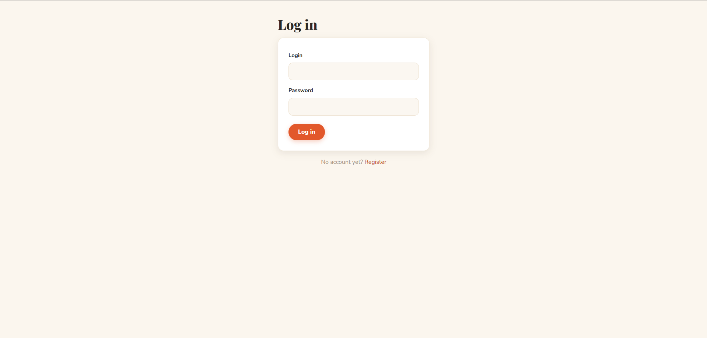
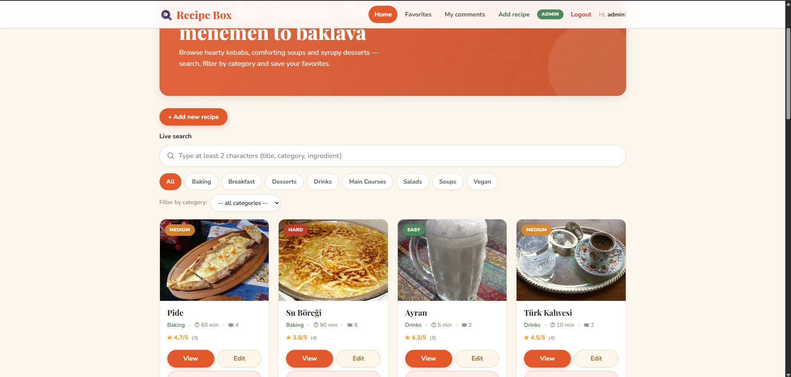
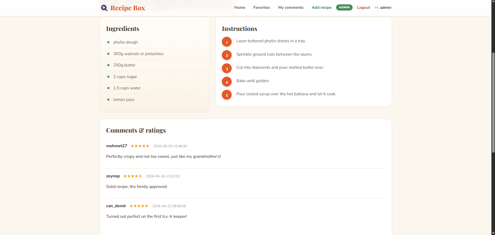
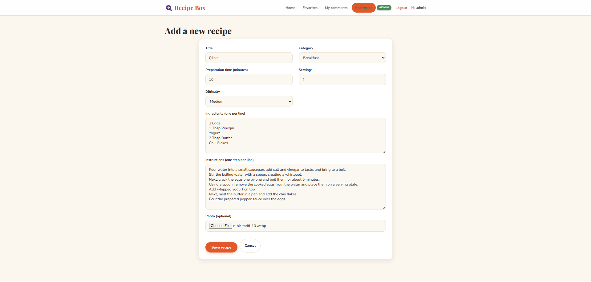
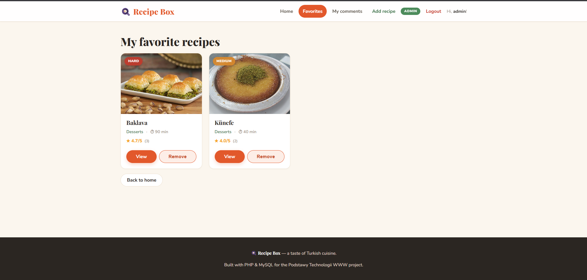
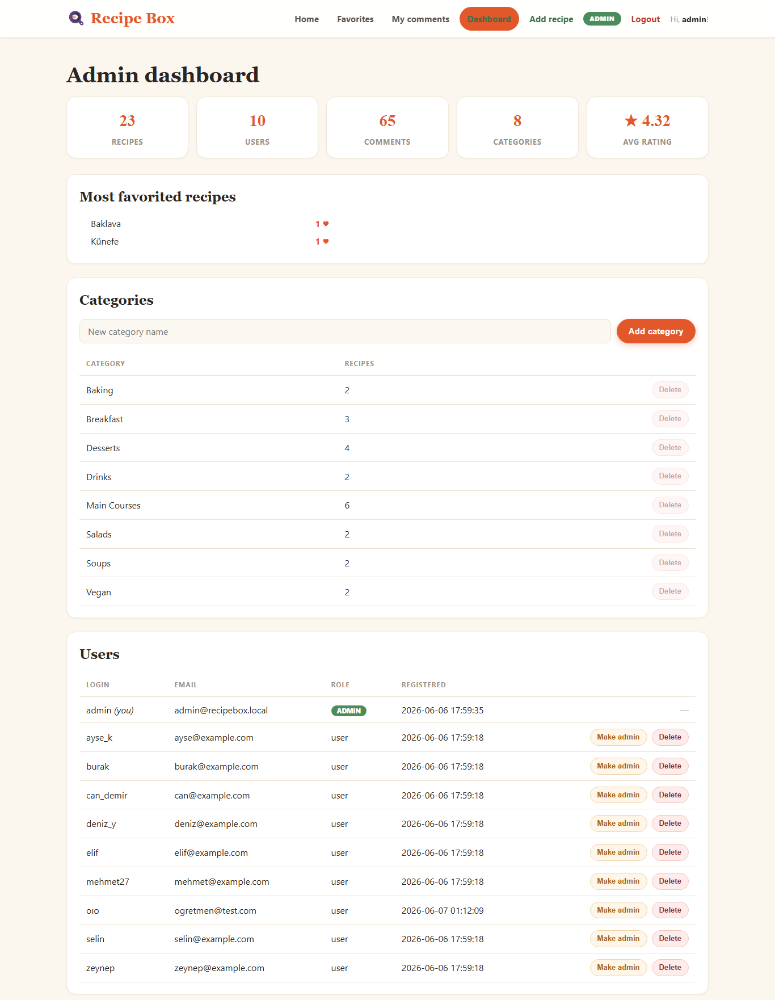
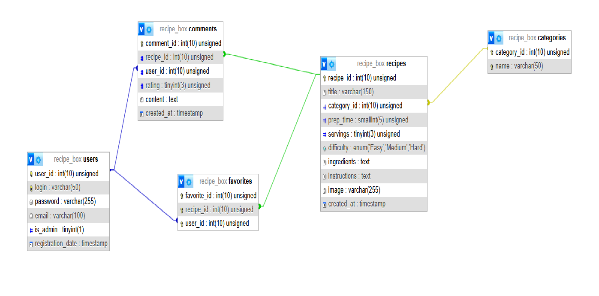

University of Siedlce — Faculty of Exact and Natural Sciences — Computer Science Subject: Fundamentals of Web Technologies (Podstawy Technologii WWW)
Author: Süleyman Efe Metik, Erasmus exchange student, Computer Science Supervisor: Wojciech Nabiałek Subject coordinator: Waldemar Bartyna Siedlce, academic year 2025/2026, summer semester
The goal of this project was to design and implement a fully functional recipe-sharing web application dedicated to Turkish cuisine. The application, called Recipe Box, lets users create an account, browse a catalogue of recipes, search and filter them, save their favourites, and share their opinions through comments and star ratings.
The system distinguishes between regular users and administrators. Regular users can browse, search, favourite and comment on recipes, while administrators additionally manage the recipe catalogue — adding, editing and deleting recipes together with their photos. The application was built with PHP and a MySQL database using prepared statements, server- and client-side validation, CSRF protection and asynchronous (AJAX) requests, and it is fully responsive.
Division of work: the project was carried out individually, therefore no division of work applies.
The complete source code of the application is available in the following public repository:
https://github.com/bensullu/recipe-box
Requirements: XAMPP (Apache + MySQL/MariaDB) with PHP 8 or newer.
C:\xampp\htdocs\recipes, or clone it: git clone https://github.com/bensullu/recipe-box.githttp://localhost/phpmyadmin, go to the SQL tab, paste the contents of setup.sql and run it (this creates the recipe_box database with all tables).http://localhost/recipes/.UPDATE users SET is_admin = 1 WHERE login = 'your_login';images/ folder.The developed application allows the following:
A regular user can:
An administrator can additionally:
Other features:
Security was treated as a first-class concern throughout the application:
password_hash / password_verify).mysqli bind_param); no user input is concatenated into SQL.htmlspecialchars() before being printed in HTML.is_admin flag.user_id), never from the form, and users can only delete their own comments.
Figure 1. The login screen. New visitors can create an account from the registration page; passwords are validated and stored as bcrypt hashes.
Figure 2. The home page: a hero banner, a live search box, category filters (links and a drop-down) and a responsive grid of recipe cards with photos, difficulty tags and average star ratings.
Figure 3. A recipe details page showing the photo, the ingredient list, numbered preparation steps and the comments section with users' star ratings.
Figure 4. The administrator form for adding a new recipe — title, category, preparation time, servings, difficulty, ingredients, instructions and a photo upload.
Figure 5. The favourites page, listing the recipes saved by the currently logged-in user.
Figure 6. The admin dashboard — site statistics, most-favorited recipes, category management and user management. Administrators can also moderate (delete) any comment from a recipe page via AJAX.The database consists of five related tables: users, categories, recipes, comments and favorites. The diagram below shows the tables, their columns and the foreign-key relationships between them.

Figure 7. Entity–relationship diagram of the recipe_box database (generated from phpMyAdmin).